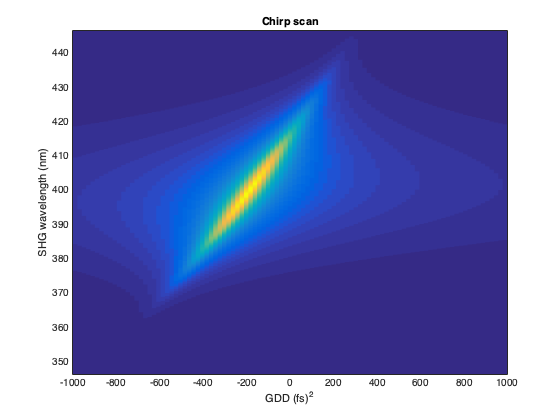

Example simulation of chirp scan
Chirp scan is a simple pulse characterization technique. A sequence of second harmonic spectra is recorded, while introducing group delay dispersion (GDD) using either a prism compressor or a pulse shaper. A bidimensional map is thus optained, with frequency on one axis and GDD on the other axis. The map is then fitted in order to extract the phase of the original pulse. This following script shows only the simulation of the chirp scan, not the fitting procedure.
Contents
Initialize laser pulse
p = gaussianPulse('f0', 300/800, 't0', 0, 'fwhm', 10, ... 'dt',1, 'nPoints', 2^12); p.polynomialPhase([2e3 200 0 0])
Add group delay dispersion
% array with added GDD, along second dimension addedGDD = linspace(-1000, 1000, 100); % (p.timeUnits)^2 p.spectralAmplitude = repmat(p.spectralAmplitude, 1, size(addedGDD,2)); p.groupDelayDispersion = bsxfun(@plus, p.groupDelayDispersion, addedGDD);
Calculate the second harmonic
shg = p.harmonic(2); figure() pcolor(addedGDD, shg.wavelengthArray, shg.spectralIntensity); shading flat ylim(shg.centralWavelength + 50*[-1,1]); title('Chirp scan') xlabel(['GDD (',p.timeUnits,')^2']); ylabel(['SHG wavelength (',shg.wavelengthUnits,')'])